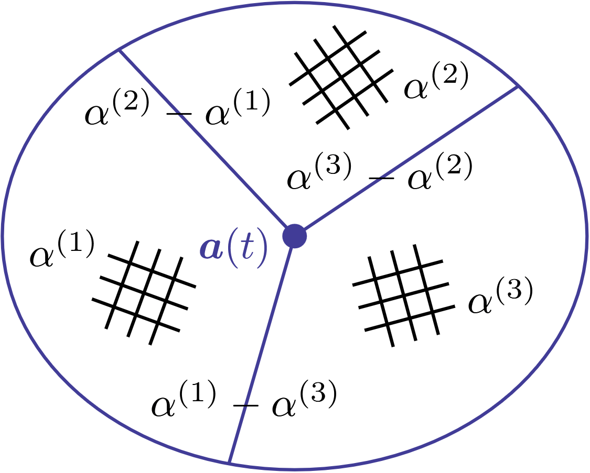

Preprints
Global Well-Posedness of a Nonlinear Fokker-Planck Type Model of Grain Growth
February 2025
Authors: Batuhan Bayir, Yekaterina Epshteyn, and William M Feldman

Read on arXiv
Book
Bootstrap 3: Yeni Başlayanlar İçin (Bootstrap 3 for Beginners)
First Edition: January 2015, Second Edition: November 2015
ISBN (Softcover): 9786059118026
Bootstrap 3 is modern CSS framework for developing mobile device friendly websites. I wrote Türkiye’s first Bootstrap 3 book when I was a 15 years old. Published by KODLAB in 2015. Book comes with supplementary DVD and contains instructive videos.
Look at the sample pages on Google Books